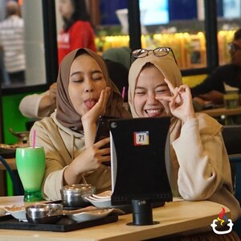
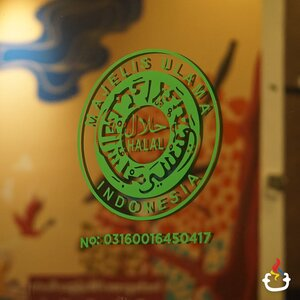
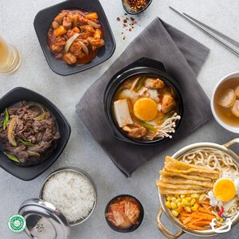
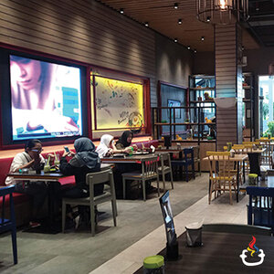
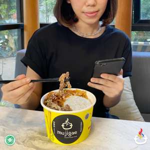

Our Speciality |
||||
|---|---|---|---|---|
|  |  |  |  |  |
High Technology |
Halal Certificate |
Fresh Ingredients |
K-Entertainment |
Mujigae Korean Delivery |
|
Kami menyediakan fasilitas self-service pada setiap mejanya dengan menggunakan iPad, sehingga kamu dapat dengan mudah memesan menu, request lagu, berfoto-foto, hingga memanggil pelayan kami hanya dengan sekali sentuhan. |
Mujigae Resto merupakan restoran Korea pertama di Indonesia yang mendapatkan sertifikasi halal MUI pada 13 Februari 2017. |
Semua resep yang digunakan merupakan resep asli dari Mujigae Resto, dimasak dengan menggunakan bahan-bahan berkualitas, diproses dengan teknik khusus, dan dikontrol dengan standard quality assurance yang ketat. |
Ingin menghadirkan suasana ke-Korea-an, kami menyediakan musik KPOP dan K-Drama yang selalu up-to-date yang akan menemanimu selama kamu makan. |
Mujigae hadir dengan 68 Outlet Online Delivery yang tersebar di Jabodetabek, Purwakarta, Jatinangor, Cimahi & Bandung. Memudahkan pesan makanan karena dekat dan cepat. |